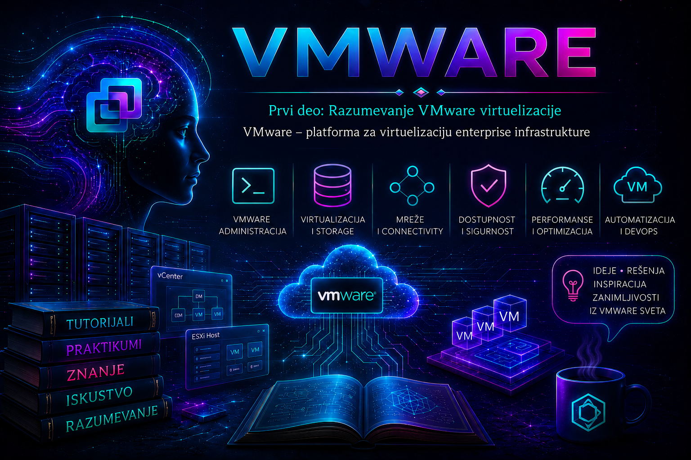

VMware

Kada prvi put čujemo naziv VMware, lako je zamisliti program pomoću kog se na jednom računaru pokreće još jedan operativni sistem. Ta slika opisuje osnovni princip, ali obuhvata samo mali deo tehnologije. U kontekstu data centra, VMware je tehnološki ekosistem za apstrakciju fizičkih resursa, izvršavanje virtuelnih mašina i centralno upravljanje compute, mrežnim i storage kapacitetima od kojih zavise poslovne aplikacije.
Virtuelizacija omogućava da jedan fizički server istovremeno pokreće više međusobno izolovanih virtuelnih mašina. Svaka virtuelna mašina, skraćeno VM, dobija virtuelne procesore, memoriju, diskove, mrežne adaptere i druge uređaje, a na njima sopstveni gostujući operativni sistem, aplikacije, korisnike i bezbednosna pravila. Iza tih virtuelnih komponenti ipak uvek stoje stvarni procesori, RAM, mrežne veze i storage uređaji: virtuelizacija ih ne stvara, već ih posreduje, raspoređuje i predstavlja u obliku kojim je lakše upravljati.
U enterprise okruženju cilj nije samo da se što više VM-ova smesti na što manje servera. Platforma mora da podrži kontrolisane promene, razdvajanje dužnosti, monitoring, održavanje, planiranje kapaciteta, visoku dostupnost, zaštitu podataka i oporavak. VMware zato treba posmatrati na dva povezana nivoa: kao izvršni sloj na kome rade virtuelne mašine i kao upravljački sloj koji više fizičkih i virtuelnih resursa organizuje u proverljivu infrastrukturnu celinu.
Od fizičkog servera do virtuelne infrastrukture
U tradicionalnom modelu operativni sistem neposredno koristi hardver jednog servera. Ako se za svaku aplikaciju nabavi poseban server, nastaju brojni uređaji koji zauzimaju prostor, troše električnu energiju i zahtevaju hlađenje, mrežne priključke, rezervne delove i održavanje, iako mnogi veći deo vremena koriste samo mali deo kapaciteta. Konsolidacija više radnih opterećenja na snažnijim hostovima može povećati iskorišćenost resursa, ali samo ako su kapacitet, kvarni domeni i performanse pažljivo projektovani.
Između hardvera i gostujućih operativnih sistema nalazi se hipervizor. VMware ESXi je type-1, odnosno bare-metal hipervizor: instalira se na podržani fizički server i upravlja njegovim resursima. Fizički server sa instaliranim ESXi-jem naziva se ESXi host. VMkernel raspoređuje procesorsko vreme i memoriju, obrađuje virtuelni I/O i povezuje virtuelne uređaje VM-a sa fizičkim ili softverski definisanim resursima hosta.
Gostujući sistem vidi standardizovan virtuelni hardver, ali performanse i dostupnost zavise od celog puta. Virtuelni disk može biti VMDK objekat na datastore-u, a datastore može počivati na lokalnim diskovima, SAN/NAS sistemu, vSAN-u ili drugom podržanom backend-u. Virtuelni mrežni adapter komunicira preko port grupe i virtuelnog sviča, pa zatim preko fizičkih adaptera i fizičke mreže. Kada je VM spor ili nedostupan, administrator zato ispituje aplikaciju, guest OS, konfiguraciju VM-a, host, mrežu i storage, a ne pretpostavlja unapred da je uzrok „u VMware-u”.
VMware, ESXi, vCenter i vSphere
| Pojam | Uloga | Administratorsko značenje |
|---|---|---|
| VMware | Brend i širi tehnološki ekosistem, danas u portfoliju kompanije Broadcom. | Nije naziv jedne aplikacije; u razgovoru često označava čitavo virtuelno okruženje. |
| ESXi / ESX | Bare-metal hipervizor na kome se kreiraju i izvršavaju VM-ovi. | Host je stvarni izvršni sloj. U dokumentaciji linije 8 preovlađuje naziv ESXi, dok aktuelna linija 9 koristi naziv VMware ESX. |
| vCenter Server | Centralna upravljačka usluga za ESXi/ESX hostove i inventar. | Omogućava klastere, uloge i dozvole, zadatke, događaje, alarme i koordinaciju naprednih funkcija. Isporučuje se kao vCenter Server Appliance. |
| vSphere | Platforma serverske virtuelizacije čije su osnovne komponente hipervizor i vCenter Server. | Tačan skup funkcija zavisi od verzije, pretplate/licence, kompatibilnosti hardvera i projektovane topologije. |
| VMware Cloud Foundation | Širi privatni-cloud paket i operativni model koji integriše vSphere sa drugim infrastrukturnim komponentama. | Ne treba ga poistovećivati sa samim vSphere-om; konkretan sastav i prava korišćenja proveravaju se prema važećem izdanju i ugovoru. |
Korisna početna formula glasi: fizički server i ESXi/ESX čine host koji može da pokreće VM-ove; više hostova, vCenter i odgovarajuće mrežne, storage i klasterske funkcije čine organizovano vSphere okruženje. Formula je namerno pojednostavljena: ozbiljna infrastruktura obuhvata i DNS, NTP, identitete, sertifikate, fizičku mrežu, storage fabric, backup, monitoring, automatizaciju, dokumentaciju i procedure promena.
Verzijska napomena: u avgustu 2026. aktuelna dokumentaciona linija obuhvata VMware vSphere 9.x, dok je vSphere 8.0 i dalje čest u postojećim okruženjima. vSphere 7.0 završio je period opšte podrške 2. oktobra 2025. godine. Postupci, podržani hardver, interoperabilnost i licencna prava ne smeju se prenositi između glavnih verzija bez provere Broadcom Compatibility Guide-a, release notes dokumenata, product interoperability matrice i važećeg ugovora. Ovaj tutorijal koristi naziv ESXi kada objašnjava široko rasprostranjena 8.x okruženja, a nazive ESX/ESXi navodi zajedno kada je važno obuhvatiti i liniju 9.x.
Arhitektonski slojevi i tok resursa
| Sloj | Primeri | Šta administrator proverava |
|---|---|---|
| Poslovna usluga | Aplikacija, baza, API, DNS, fajl-servis | SLA/SLO, vlasnik, kritičnost, zavisnosti i posledica prekida. |
| Guest OS i VM | vCPU, vRAM, VMDK, vNIC, VMware Tools | Podržan guest OS, prava veličina VM-a, stanje alata, događaji i guest metrike. |
| Virtuelizaciona platforma | ESXi/ESX, vCenter, klaster, vSwitch, port grupa, datastore | Health, contention, konfiguracioni drift, alarmi, zadaci, kapacitet i kvarni domeni. |
| Fizička infrastruktura | CPU, RAM, HBA/NIC, diskovi, SAN/NAS, svičevi, napajanje | Kompatibilnost, firmware/driver kombinacije, redundansa, latencija, greške i preostali kapacitet. |
| Operativni i bezbednosni sloj | IAM, RBAC, backup, monitoring, CMDB, patching, change management | Najmanje privilegije, audit trag, RPO/RTO, mogućnost vraćanja i vlasništvo nad promenom. |
Ovaj model sprečava dve česte greške: da se problem aplikacije automatski pripiše hipervizoru i da se platforma proglasi zdravom samo zato što su hostovi povezani. Zelen status vCenter inventara ne potvrđuje da aplikacija ispunjava poslovni cilj, baš kao što dostupan guest OS ne dokazuje da su backup i oporavak ispravni.
Od pojedinačnog hosta do klastera
Najmanje laboratorijsko okruženje može imati jedan host i lokalni datastore. Ono je dovoljno za upoznavanje sa VM-ovima, ali nema redundansu: kvar hosta prekida sva radna opterećenja na njemu. U produkciji se više kompatibilnih hostova može organizovati u klaster i povezati sa storage-om i mrežama koje omogućavaju da VM bude dostupan drugim članovima klastera.
vMotion može, kada su ispunjeni mrežni, CPU-kompatibilni, storage i licencni uslovi, premestiti aktivan VM između hostova uz minimalan prekid. vSphere High Availability može nakon kvara hosta ponovo pokrenuti zaštićene VM-ove na preostalim hostovima; to nije isto što i neprekidno izvršavanje i ne popravlja grešku unutar aplikacije. Distributed Resource Scheduler može preporučivati ili automatizovati raspored opterećenja, u skladu sa pravilima i raspoloživim funkcijama izdanja. Svaka od ovih mogućnosti zahteva kapacitet za kvar i pravilno projektovane zavisnosti.
Centralno upravljanje je važna kontrolna tačka, ali i kritična upravljačka komponenta. Gubitak vCenter-a obično ne gasi VM-ove koji već rade na hostovima, ali ograničava centralne operacije i funkcije koje zavise od njega. Zbog toga se štite konfiguracija, identitet, DNS/NTP zavisnosti i file-based backup vCenter Server Appliance-a; snapshot samog appliance-a nije zamena za podržanu strategiju backup-a i restore-a.
Zašto organizacije koriste VMware
- Konsolidacija: više pravilno dimenzionisanih radnih opterećenja koristi zajednički skup fizičkih resursa, uz kontrolu prekomerne dodele i contention-a.
- Standardizacija i brzina: template-i, Content Library, profili i automatizacija ubrzavaju ponovljivo uvođenje sistema.
- Operativna pokretljivost: VM nije trajno vezan za jednu fizičku mrežnu karticu ili disk, pa ga je pod podržanim uslovima lakše premeštati i održavati.
- Dostupnost: klasterske funkcije mogu smanjiti uticaj pojedinačnih kvarova, ali zahtevaju uklanjanje zajedničkih tačaka otkaza i dokazano dovoljno rezervnog kapaciteta.
- Izolacija i kontrola: različiti sistemi dele platformu, ali imaju odvojene virtuelne uređaje i operativne sisteme; izolacija ipak nije dozvola da se zanemare segmentacija, hardening i najmanje privilegije.
- Podrška različitim platformama: VM-ovi mogu pokretati podržane Windows i Linux sisteme, tradicionalne aplikacije, razvojna okruženja i čvorove kontejnerskih platformi.
Prednosti imaju cenu u složenosti. Velika gustina VM-ova povećava posledicu kvara jednog hosta. Prekomerno dodeljeni vCPU povećava CPU scheduling pritisak; preveliki VM može otežati NUMA lokalnost i migracije; memory overcommit može aktivirati reclaim mehanizme sa posledicama po performanse. Thin provisioning štedi prostor samo dok se rast prati, a nekontrolisano kreiranje VM-ova vodi u VM sprawl: nepoznato vlasništvo, nepatchovani sistemi, nepotreban trošak i proširena napadna površina.
Mreža, storage, bezbednost i oporavak kao zavisnosti
Virtuelna infrastruktura nije izolovano ostrvo. Management, vMotion, storage, vSAN i mreže radnih opterećenja imaju različite tokove, rizike i zahteve. Njihova logička segmentacija, fizička redundansa, MTU usklađenost, VLAN konfiguracija i kontrola pristupa moraju biti end-to-end dosledni. Dve fizičke mrežne kartice na hostu ne daju stvarnu dostupnost ako završavaju na istom fizičkom sviču ili zavise od istog napajanja.
Storage projektovanje povezuje kapacitet, performanse, dostupnost i oporavak. Administrator mora znati koji datastore koristi VM, kakvu politiku zaštite ima backend, koliki su latencija i queue pritisak, kako se ponaša pri gubitku putanje i ko reaguje na APD ili PDL događaje. Popunjen datastore može zaustaviti rast thin diskova i snapshot delta fajlova i ugroziti VM-ove; alarm bez odgovornog tima i eskalacionog postupka nije zaštita.
Bezbednost obuhvata odvojene administratorske naloge, RBAC po principu najmanjih privilegija, MFA tamo gde je podržana kroz izabrani identity model, upravljanje sertifikatima, hardening, ograničen i privremen ESXi Shell/SSH pristup, patching, audit događaje i zaštitu management mreže. Direktan root pristup hostu ne treba da bude svakodnevni administrativni model. Posebno je važno razlikovati snapshot, replikaciju i backup: snapshot je kratkotrajni mehanizam stanja i zavisnost od izvornog VM-a, a ne samostalna rezervna kopija.
Šta VMware može, a šta ne može da garantuje
| Mogućnost | Šta pruža | Šta ne garantuje |
|---|---|---|
| HA | Automatsko ponovno pokretanje zaštićenog VM-a posle detektovanog kvara hosta. | Nulti prekid, ispravnost aplikacije ili oporavak podataka. |
| vMotion | Planiranu migraciju aktivnog VM-a pod podržanim uslovima. | Da je svaka kombinacija CPU-a, mreže, storage-a i licence kompatibilna. |
| Snapshot | Kratkotrajnu tačku povratka pre kontrolisane promene. | Backup, arhivu ili bezrizično dugoročno čuvanje. |
| Thin provisioning | Logičku dodelu većeg kapaciteta uz fizičko zauzimanje prema rastu podataka. | Da fizički prostor neće biti iscrpljen. |
| Centralno upravljanje | Jedinstven inventar, politike, zadatke, događaje i kontrolu pristupa. | Dobru arhitekturu, tačne procedure ili odgovorno odobravanje promena. |
VMware u savremenoj hibridnoj infrastrukturi
Virtuelne mašine, kontejneri i cloud nisu međusobno isključivi modeli. Fizički server može pokretati hipervizor, hipervizor VM-ove, a VM-ovi Kubernetes čvorove i kontejnere. Organizacija istovremeno može imati tradicionalne aplikacije u sopstvenom data centru, privatni cloud i servise javnog clouda. Poznavanje virtuelizacije pomaže da se Infrastructure as Code, automatizacija, CI/CD i kontejnerske platforme povežu sa stvarnim kapacitetom, mrežom, identitetom i kvarnim domenima na kojima rade.
Desktop proizvodi za Windows, Linux ili macOS korisni su za učenje i lokalne laboratorije, ali ne predstavljaju zamenu za ESXi/ESX, vCenter, klaster, zajednički storage i enterprise mrežu. Ovaj tutorijal je usmeren na serversku administraciju; desktop hipervizor može poslužiti samo kao jedan od načina da se laboratorija ugnezdi na ličnom računaru, uz ograničenja nested virtualizacije i raspoloživog hardvera.
Administratorski način razmišljanja
VMware administrator ne upravlja samo ikonama virtuelnih mašina. On razume poslovnog vlasnika i kritičnost usluge, prati fizičke hostove, kompatibilnost firmware-a i drajvera, kapacitet datastore-a, mrežne putanje, alarme, logove, backup poslove, snapshot-e, sertifikate i životni ciklus platforme. Sarađuje sa mrežnim, storage, sistemskim, bezbednosnim, aplikativnim i backup timovima, jer promena jednog sloja može imati posledice na sve ostale.
Pre svake promene administrator odgovara na pet pitanja: šta je cilj, koje su zavisnosti, koliki je obim mogućeg uticaja, kojim dokazom će potvrditi uspeh i kako će bezbedno vratiti prethodno stanje. Brzina kreiranja VM-a ne oslobađa obaveze da se odrede vlasnik, rok korišćenja, klasifikacija podataka, patching, monitoring, backup, budžet resursa i uslov uklanjanja.
Praktikum: inventar i dokazivanje arhitekture bez promene stanja
Cilj i kontekst: cilj prve vežbe nije instalacija niti konfiguraciona promena, već sposobnost da se iz dostupnog laboratorijskog okruženja izvede dokaziva mapa komponenti: ko izvršava VM-ove, ko njima centralno upravlja, gde se nalaze diskovi, kojom mrežom komuniciraju i koji kvarni domeni postoje. Ovo je osnov za svaki kasniji incident, upgrade i plan kapaciteta.
Topologija: dovoljan je jedan laboratorijski ESXi 8.x ili ESX 9.x host sa najmanje jednim datastore-om i jednom testnom VM. vCenter je poželjan, ali nije obavezan; ako ga nema, vežba se radi kroz Host Client. Za nested laboratoriju potrebno je da desktop hipervizor i procesor podržavaju izlaganje hardverske virtualizacije guest-u.
Nalozi, alati i rizik: koristite namenski read-only nalog u vCenter-u ili na hostu. PowerCLI deo zahteva PowerShell i modul VMware.PowerCLI; SSH/ESXi Shell nije potreban za standardnu vežbu. Sve osnovne provere čitaju stanje. Ne uključujte SSH samo zbog vežbe i ne izvršavajte remediation, restart servisa, maintenance mode ili promene mreže. Snimci ekrana i izvezeni podaci mogu sadržati FQDN-ove, IP adrese i imena poslovnih sistema, pa ih tretirajte kao internu dokumentaciju.
Vežba 1: GUI inventar i mapa zavisnosti
- Prijavite se na vSphere Client preko FQDN-a vCenter Servera. Ako vCenter nije dostupan u laboratoriji, otvorite Host Client preko management FQDN-a ili IP adrese hosta.
- U inventaru evidentirajte vCenter verziju, data center, klaster, hostove i testni VM. Na hostu zabeležite verziju/build, model, CPU, ukupnu memoriju i health upozorenja.
- Za testni VM zabeležite host na kome radi, guest OS, broj vCPU, memoriju, datastore svakog virtuelnog diska, port grupu svakog vNIC-a i status VMware Tools-a.
- Otvorite Monitor prikaze za host i VM. Pregledajte Issues and Alarms, Tasks and Events i osnovne performance metrike u vremenskom opsegu koji obuhvata poslednju poznatu promenu.
- Na nivou hosta pregledajte fizičke NIC-ove, virtuelne svičeve/port grupe, storage adaptere, uređaje i datastore-e. Ne menjajte teaming, VLAN, MTU, putanje ni multipathing politiku.
- Nacrtajte tok: poslovna usluga → VM → host/klaster → datastore/storage → port grupa/vSwitch → fizički uplink/mreža. Obeležite elemente za koje nemate dokaz; pretpostavka nije završena stavka inventara.
Očekivani rezultat i validacija: inventar mora omogućiti da se za izabrani VM nedvosmisleno odgovori gde se izvršava, gde su mu diskovi, na koju je mrežu povezan, kojim se sistemom upravlja i koji bi kvarovi uticali na njega. Podaci iz prikaza VM-a moraju se slagati sa prikazima hosta, mreže i datastore-a. Alarm se ne zatvara samo zato što trenutno nije crven; proverava se događaj, trajanje i uzrok.
Vežba 2: read-only PowerCLI potvrda
Sledeće komande izvršavaju se u PowerShell-u na administratorskoj radnoj stanici, pod nalogom koji ima samo pravo čitanja potrebnog inventara. Zamenite primer FQDN-a laboratorijskom vrednošću. Komande čitaju stanje; rezultat ne objavljujte bez uklanjanja poverljivih naziva i adresa.
Import-Module VMware.PowerCLI
Connect-VIServer -Server vcsa.lab.example
Get-VMHost |
Select-Object Name, ConnectionState, PowerState, Version, Build,
@{Name='CpuUsagePct';Expression={[math]::Round(100 * $_.CpuUsageMhz / $_.CpuTotalMhz, 1)}},
@{Name='MemoryUsagePct';Expression={[math]::Round(100 * $_.MemoryUsageGB / $_.MemoryTotalGB, 1)}}
Get-Datastore |
Select-Object Name, Type, State,
@{Name='CapacityGB';Expression={[math]::Round($_.CapacityGB, 1)}},
@{Name='FreeGB';Expression={[math]::Round($_.FreeSpaceGB, 1)}},
@{Name='FreePct';Expression={[math]::Round(100 * $_.FreeSpaceGB / $_.CapacityGB, 1)}}
Get-VM |
Select-Object Name, PowerState, VMHost, NumCpu, MemoryGB,
@{Name='ToolsStatus';Expression={$_.ExtensionData.Guest.ToolsStatus}}
Disconnect-VIServer -Server vcsa.lab.example -Confirm:$false
Očekivani rezultat: dobijaju se tabele hostova, datastore-a i VM-ova. Procenat trenutne upotrebe nije dovoljan za capacity odluku: predstavlja trenutak i mora se porediti sa istorijskim metrikama, pikovima, rezervacijama i planom rasta. Ako Connect-VIServer prijavi problem sa sertifikatom, ne postavljajte trajno ignorisanje sertifikata kao produkciono rešenje; proverite FQDN, vreme, chain of trust i politiku organizacije.
Vežba 3: osnovna dijagnostika kada VM deluje nedostupno
Scenario: korisnik prijavljuje da „VMware server ne radi”. Cilj je razdvojiti simptom, obim i posledicu pre bilo kakve promene. Bezbedna laboratorijska simulacija je da se izabere ugašen testni VM ili namerno koristi pogrešan DNS naziv aplikacije; nemojte prekidati mrežu hosta, gasiti produkcioni VM ili puniti datastore.
- Definišite simptom: da li je nedostupna aplikacija, guest OS, konzola, jedan VM, svi VM-ovi na hostu ili ceo vCenter? Zabeležite početak, pogođene korisnike i poslednju poznatu ispravnost.
- Proverite upravljački sloj: status VM-a i hosta, aktivne alarme, recent tasks/events i poslednje promene. Ne tumačite nedostupan vCenter kao dokaz da su VM-ovi ugašeni.
- Proverite zavisnosti: datastore dostupnost i slobodan prostor, stanje fizičkih uplinkova i port grupe, host health i da li drugi VM na istom kvarnom domenu pokazuje isti simptom.
- Korelirajte vreme: aplikacione i guest logove uporedite sa vCenter događajima i host logovima u istom vremenskom prozoru. Na hostu su, između ostalog, relevantni
/var/log/hostd.logza host management,/var/log/vpxa.logza komunikaciju sa vCenter-om,/var/log/vmkernel.logza VMkernel, storage i mrežne događaje i/var/log/vobd.logza VMkernel observation događaje. Pristup logovima sprovodi se odobrenim mehanizmom ili support bundle-om; ESXi Shell/SSH se ne ostavlja nepotrebno uključen. - Postavite i testirajte hipotezu: na primer, „aplikacioni DNS zapis je pogrešan” ili „VM je ugašen posle odobrene promene”. Birajte proveru koja najmanje menja stanje.
- Korigujte i validirajte: tek nakon potvrde uzroka primenite odobrenu korekciju. Potvrdite oporavak iz perspektive aplikacije i korisnika, ne samo zelenim statusom VM-a.
| Element incidenta | Primer pravilnog zapisa |
|---|---|
| Simptom i obim | Aplikacioni URL je nedostupan za jednu uslugu; VM konzola i drugi VM-ovi na hostu rade. |
| Neposredni uzrok | Klijent razrešava zastarelu IP adresu. |
| Osnovni uzrok | DNS promena nije uključena u migracionu kontrolnu listu. |
| Privremeno rešenje | Kontrolisana korekcija zapisa uz odgovarajući TTL i potvrdu vlasnika usluge. |
| Trajna mera | Dopuna procedure, automatizovana validacija DNS-a i jasno vlasništvo nad promenom. |
Rollback laboratorije: pošto su inventar i PowerCLI provere read-only, nema promene koju treba vraćati. Ako je korišćen pogrešan laboratorijski DNS zapis kao simulacija, vratite prethodnu dokumentovanu vrednost, očistite samo odgovarajući testni cache i potvrdite razrešavanje sa najmanje dve tačke. Uklonite privremene izvoze koji sadrže osetljive podatke i odjavite sesiju.
Administratorske prakse
- Koristite podržan hardver, firmware i drajvere prema Compatibility Guide-u; „radi pri instalaciji” nije dokaz podrške.
- Planirajte kapacitet za pikove, održavanje i definisani broj istovremenih kvarova, a ne samo za trenutni prosek.
- Razdvojte management, storage, migracione i workload tokove prema riziku i projektovanom modelu, uz stvarnu fizičku redundansu.
- Primenjujte najmanje privilegije, namenske administratorske naloge i audit promena; deljeni root nalog nije prihvatljiv operativni model.
- Snapshot koristite kratkotrajno i sa planom konsolidacije; backup i restore redovno testirajte prema RPO/RTO zahtevima.
- Pre promene prikupite početno stanje, odredite kriterijum uspeha i rollback; posle promene validirajte i tehnički i poslovni ishod.
- Održavajte inventar vlasnika, klasifikacije, roka korišćenja, patchinga, monitoringa i zaštite svakog VM-a da biste sprečili VM sprawl.
Završna kontrolna tačka
Lekcija je savladana kada čitalac može da: precizno razlikuje VMware, ESXi/ESX, vCenter, vSphere i VMware Cloud Foundation; prati put CPU-a, memorije, diska i mrežnog saobraćaja od VM-a do fizičke infrastrukture; objasni zašto HA nije isto što i backup ili aplikaciona dostupnost; navede posledice prekomerne dodele, thin provisioninga i VM sprawl-a; kroz GUI i read-only PowerCLI napravi proverljiv inventar; razdvoji problem aplikacije, guest sistema, hosta, mreže i storage-a; i pre svake promene definiše dokaz uspeha, rizik i rollback.
Pitanja za proveru razumevanja
- Zašto VMware nije najbolje opisati samo kao program za pokretanje dodatnog operativnog sistema?
- Koja je razlika između ESXi/ESX hosta, virtuelne mašine, vCenter Servera i vSphere platforme?
- Koji fizički i logički slojevi učestvuju kada VM pristupa disku ili mreži?
- Zašto kvar vCenter-a nije isto što i gašenje svih VM-ova, i koje operativne posledice ipak ima?
- Šta HA radi posle kvara hosta, a šta ne može da garantuje na nivou aplikacije i podataka?
- Zašto snapshot nije backup i kakav rizik nosi njegovo nekontrolisano zadržavanje?
- Kako se dokazuje stvarna mrežna i storage redundansa?
- Koje informacije treba prikupiti pre nego što se simptom „VMware ne radi” pretvori u tehničku hipotezu?
- Koje odluke pri dimenzionisanju VM-a mogu uticati na performanse, dostupnost i mogućnost migracije?
- Zašto se verzija, licenca, kompatibilnost i podrška proveravaju za svaku konkretnu implementaciju?
Zaključak lekcije
VMware serverska virtuelizacija pretvara fizičke compute, mrežne i storage resurse u standardizovanu platformu na kojoj se izvršavaju i centralno upravljaju virtuelne mašine. ESXi/ESX obavlja stvarni izvršni rad na hostu, vCenter organizuje inventar i upravlja više hostova, a vSphere povezuje te komponente sa funkcijama potrebnim za rad data centra.
Najveća vrednost platforme nije samo konsolidacija, već kontrolisana pokretljivost radnih opterećenja, standardizacija, automatizacija, preglednost i mogućnost projektovanja dostupnosti. Nijedna od tih prednosti nije automatska: fizička ograničenja, zajedničke tačke otkaza, licencni uslovi, kompatibilnost, pogrešno dimenzionisanje i nedisciplinovane promene mogu fleksibilnu platformu pretvoriti u koncentrisan rizik.
Odgovoran administrator zato svaku virtuelnu komponentu povezuje sa fizičkom zavisnošću i poslovnom posledicom. On prvo prikuplja dokaze, zatim postavlja hipotezu, menja stanje samo uz odobrenje i rollback, a uspeh potvrđuje iz perspektive usluge. Ovaj način razmišljanja biće osnova za naredne lekcije o profesionalnoj ulozi VMware znanja, arhitekturi hipervizora, virtuelnim mašinama, mreži, storage-u, klasterima, dostupnosti, bezbednosti i troubleshooting-u.